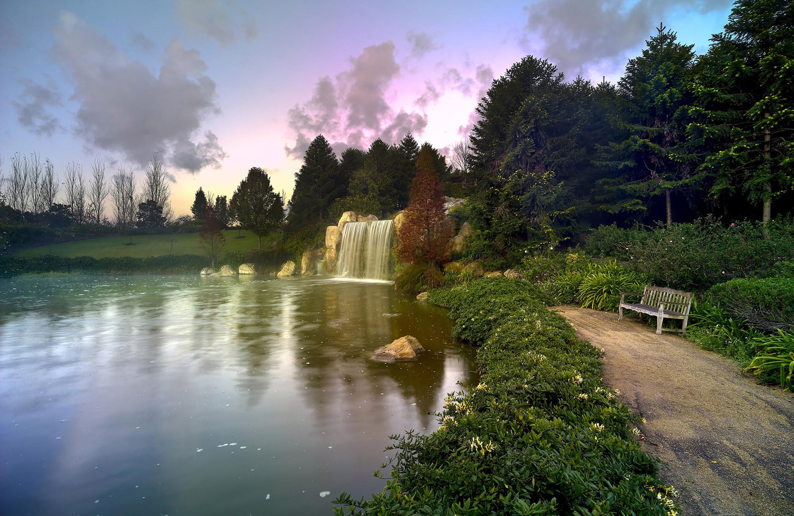
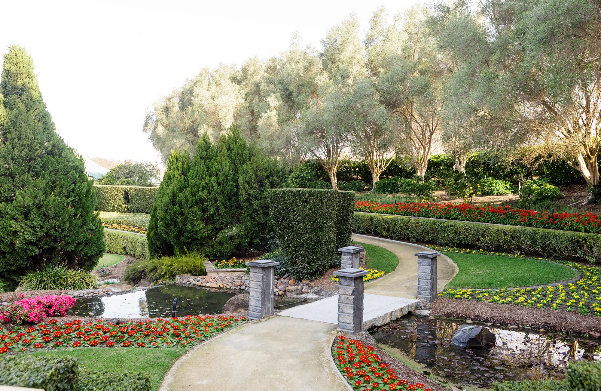

Hunter Valley Gardens
Where to find us
Opening Hours: The gardens are open 7 days a week from 9am – 4:30pm

An easy 2-hour drive North of Sydney via the M1, turning off at the Cessnock/Vineyards Exit, following the signs through to Cessnock and then on to Pokolbin. Air travel - Newcastle Airport is a 50-minute drive from the Gardens.

Plan your day at the beautiful Hunter Valley Gardens using the Garden map.